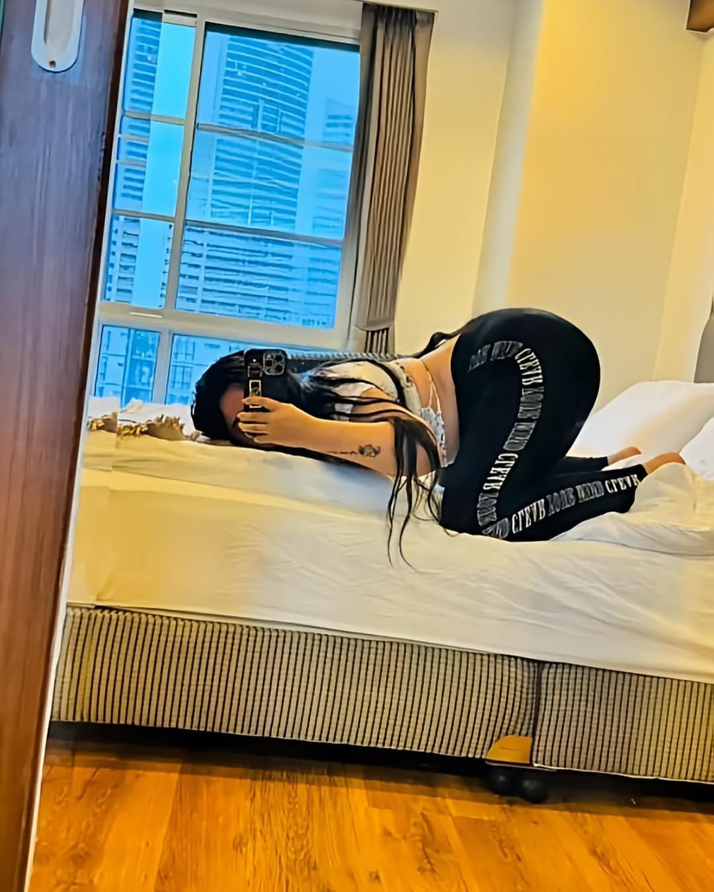
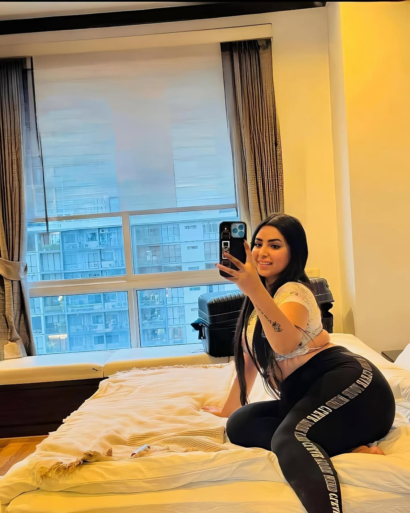

جوري الدوسري هي إحدى الشخصيات المعروفة على منصات التواصل الاجتماعي في العالم العربي، اشتهرت بأسلوبها الجريء ومحتواها الحيوي، لا سيما على تطبيق تيك توك.
بداياتها ومسيرتها
بدأت جوري رحلتها الرقمية بنشر مقاطع قصيرة تسلط الضوء على أسلوب حياتها ويومياتها، وتمكنت بسرعة من جذب انتباه الجمهور بفضل عفويتها وطريقتها الفريدة.
أسلوبها ومحتواها
تُعرف جوري بإطلالاتها الجريئة ومقاطع الرقص التي تعتمد على التريندات الموسيقية، مما جعلها تحظى بمتابعة واسعة. كما تنشر أحيانًا آراءها الشخصية حول مواضيع اجتماعية، بطريقة مباشرة وصريحة.
حضورها على المنصات
- تيك توك: المنصة الرئيسية التي ساهمت في شهرتها.
- سناب شات: تنشر فيه يوميات ومحتوى شخصي.
- إنستغرام: لعرض صورها وإطلالاتها.
الجدل والانتقادات
لم تسلم جوري من الانتقادات، حيث يعتبر البعض أن مقاطعها تحتوي على حركات ورقصات "غير لائقة" أو "مبالغ فيها"، خاصةً من منظور المجتمعات المحافظة. في المقابل، يرى مؤيدوها أنها تعبّر عن شخصيتها بحرية ضمن حدود المنصات.
شائعات وفضائح
انتشرت بعض الشائعات حول جوري على منصات مختلفة، من ضمنها مزاعم عن طردها من بعض الدول أو تورطها في قضايا أخلاقية. لكن لا توجد مصادر رسمية تؤكد هذه المعلومات، كما لم تصدر عنها توضيحات مباشرة.
ورغم أن هذه الأخبار تُتداول بكثرة، فإنها تظل في إطار الجدل العام الذي يطال الكثير من صانعات المحتوى الجريء في العالم العربي.
معرض صور جوري


في النهاية، تبقى جوري الدوسري شخصية مؤثرة في عالم السوشيال ميديا، سواء أحبها البعض أو اختلفوا معها. وما زالت تحافظ على جمهور واسع يتابعها يوميًا.